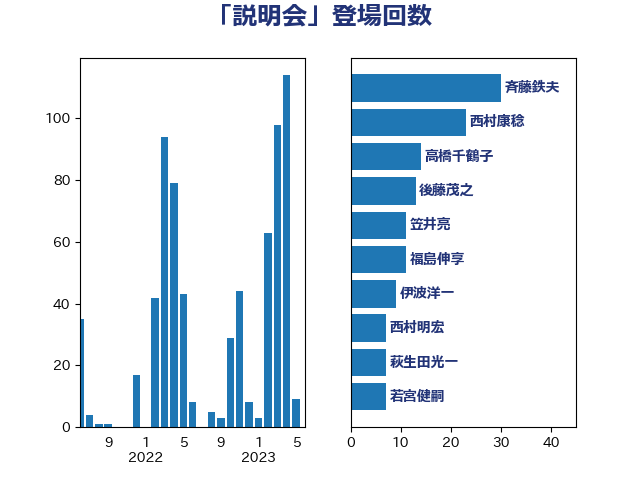

単語「説明会」

| 斉藤鉄夫 | 公明党 | 30 回 |
| 西村康稔 | 自由民主党 | 23 回 |
| 高橋千鶴子 | 日本共産党 | 14 回 |
| 後藤茂之 | 自由民主党 | 13 回 |
| 笠井亮 | 日本共産党 | 11 回 |
| 福島伸享 | 無所属 | 11 回 |
| 伊波洋一 | 無所属 | 9 回 |
| 西村明宏 | 自由民主党 | 7 回 |
| 萩生田光一 | 自由民主党 | 7 回 |
| 若宮健嗣 | 自由民主党 | 7 回 |
| 岸田文雄 | 自由民主党 | 7 回 |
| 阿部知子 | 立憲民主党 | 6 回 |
| 鈴木俊一 | 自由民主党 | 6 回 |
| 永岡桂子 | 自由民主党 | 6 回 |
| 末松信介 | 自由民主党 | 6 回 |
| 小熊慎司 | 立憲民主党 | 5 回 |
| 城井崇 | 立憲民主党 | 5 回 |
| 野田聖子 | 自由民主党 | 4 回 |
| 田村智子 | 日本共産党 | 4 回 |
| 櫛渕万里 | れいわ新選組 | 4 回 |
| 梶山弘志 | 自由民主党 | 4 回 |
| 後藤祐一 | 立憲民主党 | 4 回 |
| 山添拓 | 日本共産党 | 4 回 |
| 山口壯 | 自由民主党 | 4 回 |
| 階猛 | 立憲民主党 | 3 回 |
| 長浜博行 | 無所属 | 3 回 |
| 金子恵美 | 立憲民主党 | 3 回 |
| 金子恭之 | 自由民主党 | 3 回 |
| 遠藤良太 | 日本維新の会 | 3 回 |
| 谷公一 | 自由民主党 | 3 回 |
| 藤丸敏 | 自由民主党 | 3 回 |
| 芳賀道也 | 国民民主党 | 3 回 |
| 白石洋一 | 立憲民主党 | 3 回 |
| 田村まみ | 国民民主党 | 3 回 |
| 片山大介 | 日本維新の会 | 3 回 |
| 浜田靖一 | 自由民主党 | 3 回 |
| 横沢高徳 | 立憲民主党 | 3 回 |
| 柳本顕 | 自由民主党 | 3 回 |
| 岸真紀子 | 立憲民主党 | 3 回 |
| 岩田和親 | 自由民主党 | 3 回 |
| 山田勝彦 | 立憲民主党 | 3 回 |
| 小林鷹之 | 自由民主党 | 3 回 |
| 宮本周司 | 自由民主党 | 3 回 |
| 太田房江 | 自由民主党 | 3 回 |
| 大石あきこ | れいわ新選組 | 3 回 |
| 吉良よし子 | 日本共産党 | 3 回 |
| 加藤勝信 | 自由民主党 | 3 回 |
| 伊藤岳 | 日本共産党 | 3 回 |
| 高木かおり | 日本維新の会 | 2 回 |
| 馬場雄基 | 立憲民主党 | 2 回 |
| 野田国義 | 立憲民主党 | 2 回 |
| 野村哲郎 | 自由民主党 | 2 回 |
| 谷田川元 | 立憲民主党 | 2 回 |
| 角田秀穂 | 公明党 | 2 回 |
| 自見はなこ | 自由民主党 | 2 回 |
| 簗和生 | 自由民主党 | 2 回 |
| 竹内真二 | 公明党 | 2 回 |
| 石田昌宏 | 自由民主党 | 2 回 |
| 石井正弘 | 自由民主党 | 2 回 |
| 武部新 | 自由民主党 | 2 回 |
| 松本剛明 | 自由民主党 | 2 回 |
| 徳永エリ | 立憲民主党 | 2 回 |
| 庄子賢一 | 公明党 | 2 回 |
| 岩渕友 | 日本共産党 | 2 回 |
| 岡田直樹 | 自由民主党 | 2 回 |
| 山本香苗 | 公明党 | 2 回 |
| 小池晃 | 日本共産党 | 2 回 |
| 小林茂樹 | 自由民主党 | 2 回 |
| 奥下剛光 | 日本維新の会 | 2 回 |
| 大島敦 | 立憲民主党 | 2 回 |
| 塩川鉄也 | 日本共産党 | 2 回 |
| 伊藤孝恵 | 国民民主党 | 2 回 |
| 仁比聡平 | 日本共産党 | 2 回 |
| 高橋はるみ | 自由民主党 | 1 回 |
| 高市早苗 | 自由民主党 | 1 回 |
| 須藤元気 | 無所属 | 1 回 |
| 長友慎治 | 国民民主党 | 1 回 |
| 野上浩太郎 | 自由民主党 | 1 回 |
| 里見隆治 | 公明党 | 1 回 |
| 酒井庸行 | 自由民主党 | 1 回 |
| 足立康史 | 日本維新の会 | 1 回 |
| 落合貴之 | 立憲民主党 | 1 回 |
| 荒井優 | 立憲民主党 | 1 回 |
| 細田健一 | 自由民主党 | 1 回 |
| 紙智子 | 日本共産党 | 1 回 |
| 篠原孝 | 立憲民主党 | 1 回 |
| 福島みずほ | 社会民主党 | 1 回 |
| 神津たけし | 立憲民主党 | 1 回 |
| 石川香織 | 立憲民主党 | 1 回 |
| 石川昭政 | 自由民主党 | 1 回 |
| 石井拓 | 自由民主党 | 1 回 |
| 畦元将吾 | 自由民主党 | 1 回 |
| 漆間譲司 | 日本維新の会 | 1 回 |
| 渡辺猛之 | 自由民主党 | 1 回 |
| 河野太郎 | 自由民主党 | 1 回 |
| 池畑浩太朗 | 日本維新の会 | 1 回 |
| 江島潔 | 自由民主党 | 1 回 |
| 永井学 | 自由民主党 | 1 回 |
| 櫻井周 | 立憲民主党 | 1 回 |
| 森山浩行 | 立憲民主党 | 1 回 |
| 森屋隆 | 立憲民主党 | 1 回 |
| 森まさこ | 自由民主党 | 1 回 |
| 梅谷守 | 立憲民主党 | 1 回 |
| 梅村みずほ | 日本維新の会 | 1 回 |
| 柴田巧 | 日本維新の会 | 1 回 |
| 本田顕子 | 自由民主党 | 1 回 |
| 本田太郎 | 自由民主党 | 1 回 |
| 木村次郎 | 自由民主党 | 1 回 |
| 新垣邦男 | 立憲民主党 | 1 回 |
| 斎藤嘉隆 | 立憲民主党 | 1 回 |
| 斎藤アレックス | 国民民主党 | 1 回 |
| 川田龍平 | 立憲民主党 | 1 回 |
| 岡本三成 | 公明党 | 1 回 |
| 山本太郎 | れいわ新選組 | 1 回 |
| 山本博司 | 公明党 | 1 回 |
| 山本剛正 | 日本維新の会 | 1 回 |
| 小野田紀美 | 自由民主党 | 1 回 |
| 小野泰輔 | 日本維新の会 | 1 回 |
| 小泉進次郎 | 自由民主党 | 1 回 |
| 小沼巧 | 立憲民主党 | 1 回 |
| 小倉將信 | 自由民主党 | 1 回 |
| 寺田稔 | 自由民主党 | 1 回 |
| 宮本岳志 | 日本共産党 | 1 回 |
| 宮崎雅夫 | 自由民主党 | 1 回 |
| 大家敏志 | 自由民主党 | 1 回 |
| 吉川元 | 立憲民主党 | 1 回 |
| 勝目康 | 自由民主党 | 1 回 |
| 加田裕之 | 自由民主党 | 1 回 |
| 伊藤孝江 | 公明党 | 1 回 |
| 井上哲士 | 日本共産党 | 1 回 |
| 五十嵐清 | 自由民主党 | 1 回 |
| 中村裕之 | 自由民主党 | 1 回 |
| 中川貴元 | 自由民主党 | 1 回 |
| 中川正春 | 立憲民主党 | 1 回 |
| 上杉謙太郎 | 自由民主党 | 1 回 |
| 三浦信祐 | 公明党 | 1 回 |